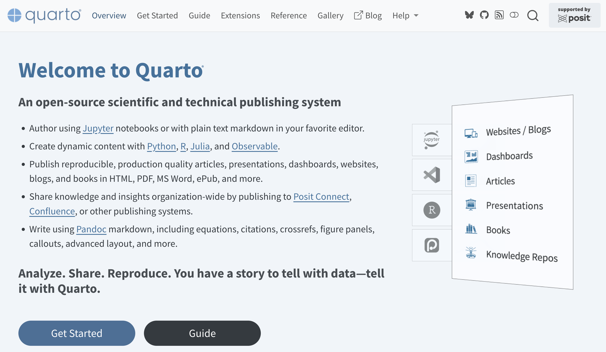
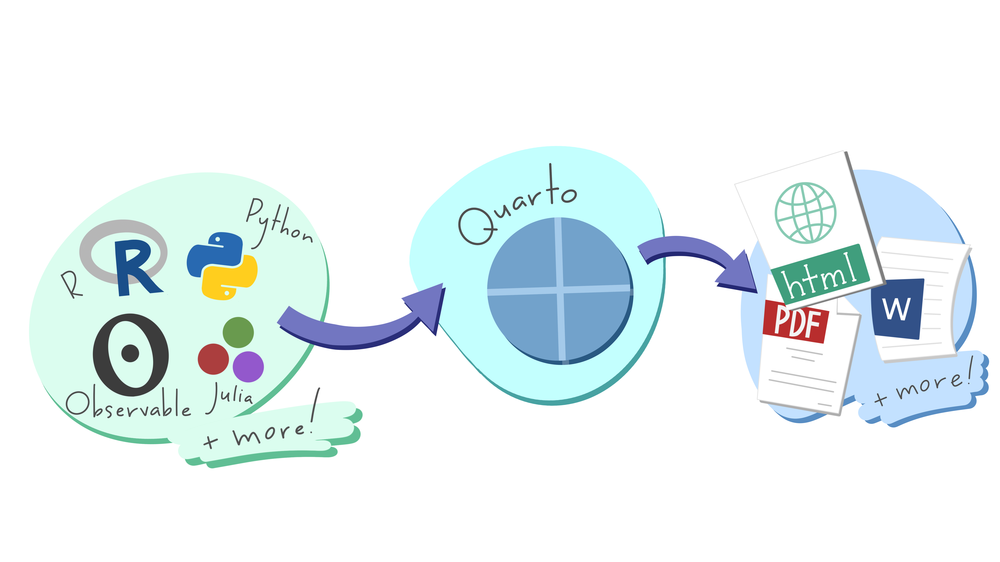
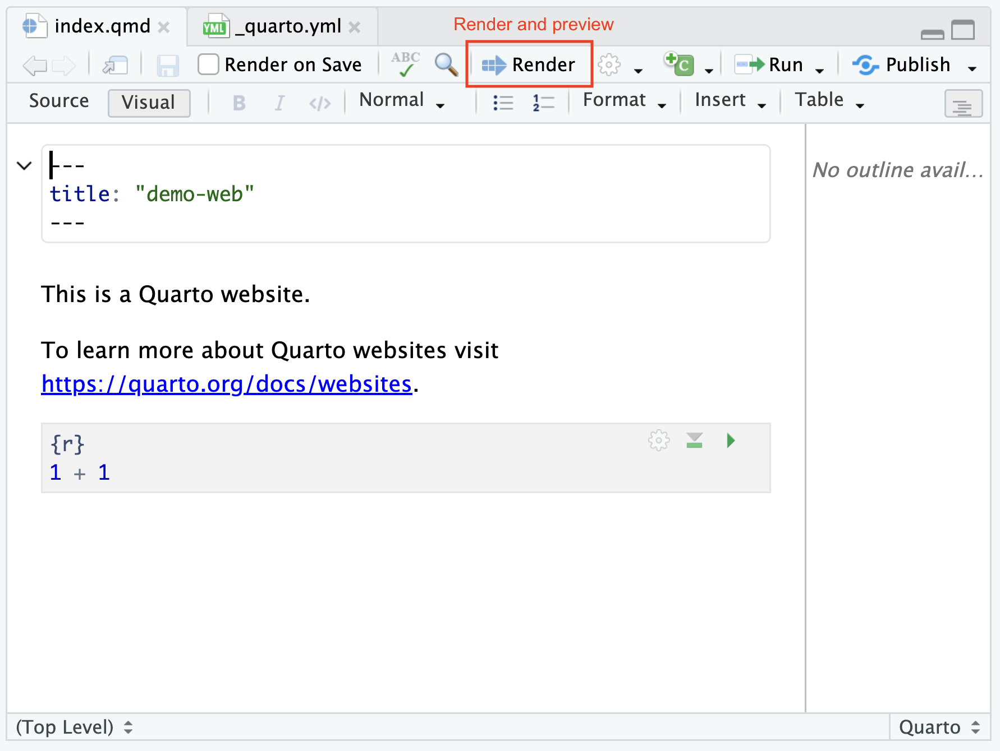

Quarto Websites (part 1)
Creating a Website with Quarto
Intro
Quarto
Open-source scientific and technical publishing system

Quarto Publications
- Articles
- Presentations
- Dashboards
- Websites
- Blogs
- Books
- Knowledge Repos
About Quarto
Quarto is developed by Posit, PBC (Public Benefit Corporation)
It was launched in 2022.
Posit’s team rebuilt the concept of R Markdown from the ground up as a language-agnostic, standalone Command Line Interface (CLI) tool.
It is named after a classic publishing term referring to a book or pamphlet produced from full sheets of paper folded twice to form four leaves (eight pages).
About Quarto
Designed to work seamlessly anywhere:
- Visual Studio Code
- JupyterLab
- Positron
- RStudio
- Neovim
- Standard command terminals
Write content once in plain text Markdown (.qmd, .ipynb, .Rmd) and publish it into any target format:
- HTML pages
- PDF documents
- Microsoft Word files
- PowerPoint presentations
- Reveal.js slides
- Interactive books
- Entire websites
Quarto core idea

Author using Markdown (
.qmd,.Rmd) files or Jupyter notebooks.Create dynamic content with Python, R, Julia, Observable JS, and more.
Write using Pandoc markdown, including equations, citations, crossrefs, figure panels, callouts, advanced layout, and more.
Quarto Websites
Quarto Websites
https://quarto.org/docs/websites/
- You can create a Website using:
- the Terminal
- RStudio
- VS Code
- Positron
- JupyterLab
Quarto Website from CLI
Create a Quarto Website (via the Terminal)
The quarto command to create a website is:
This command will create a demo-website/ folder with the following files:
demo-website/
├── _quarto.yml # The "brain" and main config file of the site
├── index.qmd # The homepage (rendered to index.html)
├── about.qmd # An about page (rendered to about.html)
├── styles.css # Optional custom CSS overrides_quarto.yml config file
_quarto.ymlis the most important configuration file.- It dictates the project type (
type: website), - navigation bars,
- site title, footer,
- global themes,
- and shared YAML options for all pages.
Things to keep in mind
A website should only have one
_quarto.ymlfile (root level)Do not change the name of
index.qmd(otherwise you risk breaking your deployment.)
Previewing a website
The quarto command to preview a website is:
quarto previewspins up a live-reload local development server- the
_site/folder is generated (don’t edit its contents) - while previewing a website, every time you save a
.qmdfile, it re-renders the page in real time
Rendering a website
The quarto command to render a website is:
Rendering a website (cont’d)
If you delete a .qmd file or rename it, the old HTML file inside _site/ might stick around until you perform a clean render or manually clear the output directory.
Quarto Website via RStudio
Quarto Website (via RStudio)
Another way to create a Quarto website is using RStudio.
Because RStudio is part of this semester’s STAT 159 datahub we want to show you how to create a Quarto website with this tool.
Create a Quarto Website (via RStudio)
- Go to the File tab in the top menu bar
- Click on New Project
- When prompted with the Create Project choose New Directory
- When prompted with the Project Type choose Quarto Website
- Then select a directory and a name for your project
- Click on Create Project
Create a Quarto Website (via RStudio)
The default file structure of the quarto website is:
demo-web/
├── _quarto.yml # The "brain" and main config file of the site
├── index.qmd # The homepage (rendered to index.html)
├── about.qmd # An about page (rendered to about.html)
├── styles.css # Optional custom CSS overrides
├── demo-web.Rproj # RStudio projectThe main difference between creating a website via RStudio -vs- the Terminal is that in RStudio you have the additional .Rproj file
Quarto Website (via RStudio)
To render and preview the website, you click on the Render button

Website Workflow
Workflow
Add additional pages to your website (e.g., by adding
.qmdfiles)Edit config file
_quarto.ymlto include added pagesWebsite Preview:
quarto previewWebsite Render:
quarto render- Renders website into the
_site/directory by default
- Renders website into the
Or click
renderbutton in RStudioRinse and repeat
Additional Elements
Website Navigation
https://quarto.org/docs/websites/website-navigation.htmlWebsite Theme
https://quarto.org/docs/output-formats/html-themes.htmlWebsite Drafts
https://quarto.org/docs/websites/website-drafts.htmlHeaders and Footers
https://quarto.org/docs/websites/website-drafts.html
Websites for Data Projects
Architecture for Data Projects
When structuring a data project as a Quarto site, you typically choose between two main layouts:
A) Modular Analysis Pipeline
Break a large analysis down into logical sequence steps. Each step becomes a separate page, accessible via the top navigation bar or a sidebar
B) The Listing / Portfolio Site
Use Quarto’s built-in Listing Pages (the engine used for blogs) to host multiple data projects or sub-analyses on one site
BTW: We’ll cover approach A
Example
Assume your project has the following pipeline:
- Data Preparation:
01_data_prep.qmddata_dictionary.qmd
- Exploratory Analysis:
02_exploration.qmd
- Modeling:
03_modeling.qmd
- Conclusions:
04_conclusions.qmd
Deciding Website Navigation
Navigation bar (i.e. menu bar, left-aligned tabs)
_quarto.yml Navigation bar
_quarto.yml Sidebar bar
_config.yml
_quarto.yml Hybrid (Navbar & Sidebar)
_config.yml
website:
title: "My Project"
navbar:
left:
- text: "Overview"
href: index.qmd
- text: "Analysis
href: analysis.qmd
- text: "Codebook"
href: data_dictionary.qmd
sidebar:
- title: "Analysis"
style: "docked"
contents:
- href: 01_data_prep.qmd
- href: 02_exploration.qmd
- href: 03_modeling.qmd
- href: 04_conclusions.qmdFreeze execution (execute: freeze: auto)
Executing complex models or massive data pipelines every single time you render a site will severely slow you down.
Setting
freeze: autotells Quarto to save computational results in a_freeze/folder.Code chunks will only re-run when the source
.qmdfile actually changes.Commit the
_freeze/folder to Git! This allows Continuous Integration platforms (like GitHub Actions) to publish your site without needing access to your raw databases or computing environment.